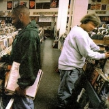

Top 100 Albums of 1990-1999 (Part Eight: 15-11)
By No Ripcord Staff
 15. Jeff Buckley
3 July, 2013 - 07:32 — No Ripcord Staff
15. Jeff Buckley
3 July, 2013 - 07:32 — No Ripcord Staff
At this point in such a list, people often just want to skip the formalities and get straight to the top. To do such a thing would to be a mistake though in this case. Here, we have five records which are innovative, creative, exciting and, in their own way, helped to shape the decade. Here we are, over a decade later and the influence of each of these records is still keenly felt today.
[Bubbling Under] | [Writers' Picks] | [100-81] | [80-61] | [60-41] | [40-21] | [20-16] | [15-11] | [10-6] | [5-1]
15. Jeff Buckley“Grace”
(Columbia – 1994)
One of David Bowie’s ten “desert island” records, Bob Dylan’s pick for songwriter of the ‘90s, object of the admiration of Lou Reed and Tom Verlaine, Thom Yorke’s inspiration for Fake Plastic Trees – it’s easy to turn Jeff Buckley’s music into a laundry list of mentions and influences, or to mythologise him as another gone-too-soon singer-songwriter whose best work was ahead of him. With songs like Everybody Here Wants You and Vancouver on the incomplete Sketches For My Sweetheart The Drunk, it might even be true. But Grace deserves to stand alone. An intimate yet sprawling look at lost love, mortality, and memory, a keen portrait of a heartbroken and lost 20-something, Grace succeeds on all these fronts and more. The title track contains one of the great vocal performances in rock history; his heartbreaking cover of Hallelujah has rightfully taken its place in the canon, the imagery in Lover, You Should’ve Come Over paints a fresh picture every time, and the lyric, “Too young to hold on but too old to just break free and run”, captures the sudden realisation of lost youth better than most artists can do in an entire song. Jazz covers and traditional carols are perfectly arranged to meld with Buckley’s own compositions, and his understanding of music theory grants every song a distinct musical place. He balances the hard rock of Eternal Life with the softer Mojo Pin, creates eerie and dense atmosphere in the surreal So Real, and if you haven’t cried to Hallelujah and Last Goodbye, whose last three verses capture the defeated feeling of a lost, unforgettable love in a way that few songs can, you simply haven’t listened closely enough. There is a wealth of musical knowledge on display here, but Buckley’s lyrics and his delivery make Grace an album for the ages. Buckley never needed to have a myth built around him, because his only album is itself a mythological understanding of heartbreak in all its many forms in a variety of musical styles, every track standing out in its own truly unique way. Forrest Cardamenis
Playlist: Lover, You Should’ve Come Over
14. Boards Of Canada
“Music Has The Right To Children”
(Warp / Skam / Matador – 1998)
I once joked with my brother about a winning formula for the ideal Boards of Canada song: combine warbling, out-of-tune synth lines with mechanical drum beats, pepper in a few samples of people spouting scientific facts and laughing babies, and voilà! But think of this not as a recipe for some fancy dessert or meal, but more for some sort of bubbling primordial ooze. Though conceived of programmed beats and oscillating synths, the captured sounds of Music Has The Right To Children are fully organic life forms. Electronic genres often have a bad tendency to sound dated after a while, as technological advancements and styles become engrained and even confined to certain decades or movements. '90s electronica was certainly no exception to this, as genres like trip-hop and drum and bass became increasingly harder to listen to without instantly associating them with the decade. But despite the fact that traces of such styles can be easily deciphered in the downtempo beats of Telephasic Workshop and ambient textures of Turquoise Hexagon Sun, Music Has The Right To Children still feels completely removed from any era or movement, as it is still one of the most bracingly human, yet completely alien-sounding, records to emerge from the decade, making it ultimately timeless. Mystery, of course, plays a huge role in its appeal, as everything from the faceless children on the albums cover to the strange vocal samples (“Ooorange”) make Music Has The Right To Children feel less like it was created by musicians and more like some documentary artefact of an alien civilization. But the album’s true success is that, despite sounding like nothing else before it, Boards Of Canada manage to invoke nostalgia in the listener through their own musical interpretation of youth created through warm synths and bright, haunting melodies. When an eerie, distant cry of “IIIIIII LOOOOOOVE YOOUUUU” emerges from The Color Of The Fire’s music box melodies, it’s almost like recalling your own first words. Peter Quinton
Playlist: Turquoise Hexagon Sun
13. DJ Shadow
“Endtroducing.....”
(Mo’ Wax – 1996)
Reviving discarded and forgotten songs, inadvertently promoting otherwise obscure performers or albums through reinterpretation, demonstration of a crate digger’s knowledge of beats and bridges, solos and harmonies which become moulded into something new: is it music? In 1996, Josh Davis, or DJ Shadow, made invalid the notion that the act of sampling and looping couldn’t constitute making music. Endtroducing….., DJ Shadow’s seminal debut, is a meticulously constructed testament to a crate digger’s passion; his obsessive attention to detail and adept manner of incorporating music from multiple sources into something unifiably and perfectly realised brought sampling to a level of high art. Though record sourcing had been the primary means with which hip-hop grew as both a culture and art form before this album, the craft itself gained momentum under his tutelage and even seemed to transcend (without the benefit of traditional instrumentation) the genre’s often constrictive criteria. There is a track called Why Hip Hop Sucks In ’96 and while, “It’s the money”, is declared reason enough, publishing rights could be blamed for the genre’s creative stagnation. Though Shadow revels in beatmeister fare to some level (the head-knock battery of The Number Song for instance), Endtroducing….. engages through an emotional and isolationist level. The dramatic Building Steam From A Grain Of Salt dismisses hip-hop’s braggadocio, focusing on melody and a sampled narrative. Stem/Long Stem seeps into industrial realms rhythmically leading into the pulsing Mutual Slump which is interrupted long enough to hear a young girl declare, “I came to America, saw Xanadu and that’s all I wanted to do: roller-skate.” It’s a moment in the album I truly love. Midnight In A Perfect World, as far as I’m concerned, stands as one of the most moving pieces of music to emerge from the ‘90s. The fact that something so grand was generated through the manipulation of pre-recorded music speaks volumes to Shadow’s abilities and, while his subsequent albums haven’t risen to the level of Endtroducing….., this monument of an album remains at a peak that few artists at his level have reached. Sean Caldwell
Playlist: Midnight In A Perfect World
12. The Flaming Lips
“The Soft Bulletin”
(Warner Bros. – 1999)
The sun looming towards Earth, a deadly pandemic disease, global rebellion – subjects of sci-fi movies and pompous prog-rock albums, not the usual fabric of enduring works, yet substance and musical brilliance abound in this career-defining album. The Soft Bulletin was The Flaming Lips’ ninth, marking a new phase in their musical journey and a path to mainstream success. It’s not just a great batch of melodies; Wayne Coyne’s imperfect voice culls emotion from each line. The desolation and longing found on songs like Waitin’ For A Superman will touch your heart. It’s that kind of album. Steven Drodz’s remarkable playing skills come to the forefront here, his forceful drums giving propulsion to songs like Race For The Prize and Slow Motion. His keyboards and synth work is subtle, and even the instrumentals stand out. The Observer and Sleeping On The Roof carry you away, resembling soundtracks for nature programs dealing with the complexity of the human body or the wonders of the universe. Songs like Buggin’ and What Is The Light? would sound bare without his instrumental prowess, which fleshes out every whimsical idea conjured by Coyne. The Soft Bulletin is about mortality, about precious life going away in the blink of an eye. War, disease, head wounds or spider bites – either man or nature will become our destroyer. Are we just carbon life-forms with an expiration date or is there something more? Coyne, the agnostic, has no answers. Yet this work is not a treatise on despair. Race For The Prize, A Spoonful Weighs A Ton, and The Gash are songs about sacrifice and hope. The notes fall perfectly in place on Feeling Yourself Disintegrate, perhaps the album’s saddest song, which speaks for unity and reminds us of the universal need for love. I’ll take that over any sappy song on the charts today. Angel Aguilar
Playlist: Feeling Yourself Disintegrate
11. R.E.M.
“Automatic For The People”
(Warner Bros. – 1992)
Right about the time that Automatic For The People was released, Athens, Georgia’s R.E.M. were still at a crossroads, adapting to the ever-changing musical climate without the company of most of their eighties college rock peers. The general feeling at the time was that R.E.M. had to follow-up with a rocker, but was it really expected of them? Out Of Time cemented their stadium status with Losing My Religion, and the defining component that took them to superstardom was a mandolin. It was their most earnest expression, but it suited them and the times – pleasant folk-pop with a jangly, understated sweetness that was good intentioned but with a dash of irony. Instead, the formative Automatic For The People sessions took them in a more contemplative direction, one where vintage jangle tones were the exception, drums were replaced by oboes, and the mandolin had to be further explored instead of serving as a gimmick riff. Fortunately, this uncertainty inspired them to seek out a truly contrarian expression, one that explored different manifestations of the themes of loss and mourning. Except for upbeat, mid-tempo rockers like Ignoreland and The Sidewinder Sleeps Tonite, the overall sentiment of Automatic For The People is as profuse as that of an aching, overgrown heart, beating to the languid rhythm of a funeral procession. The haunting string accompaniments that John Paul Jones introduces to the songs bring about a stillness of mind, evident in a series of evocative ballads that present Michael Stipe at his most empathetic and vulnerable. Nightswimming still provokes the touching image of simpler times, its strings and recital style piano evoking a twinge of nostalgia. Automatic For The People is filled with gentle, reflective gestures that demand the proper time to sink in, and once they finally do, they nourish the soul with a greater sense of grace and serenity. Juan Edgardo Rodriguez
Playlist: Nightswimming
Our Top 10 is over here, just waiting to be read.
Top 10 starts tomorrow then. OH YEAH!